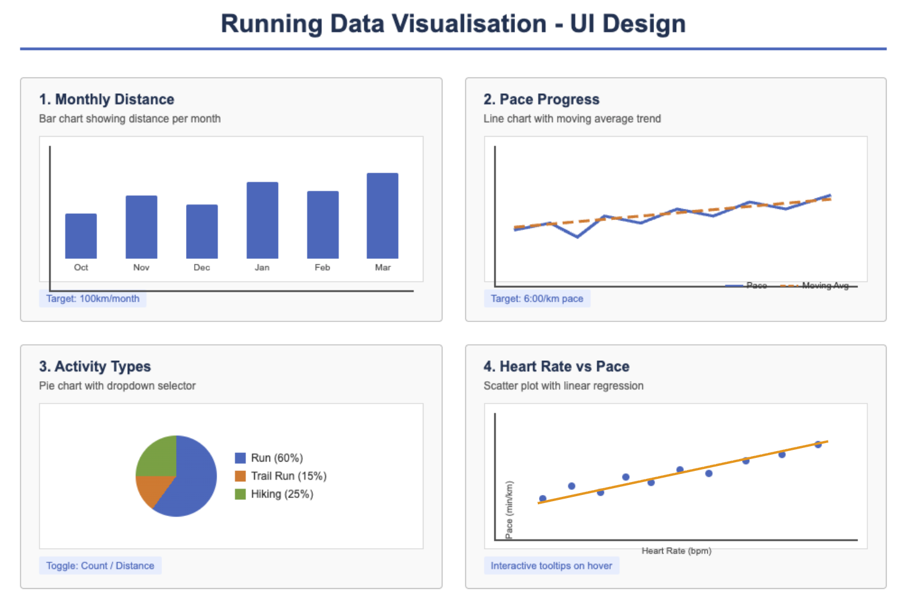

Progress Report
Project: Running Data Visualisation App
Design Work and Research
Before starting implementation, I conducted the following design work:
- Data Analysis: Analysed 168 activity records exported from Garmin and identified suitable metrics for visualisation (distance, pace, heart rate, activity type).
- Template Study: Examined the structure of the provided PieChart constructor and designed BarChart and ScatterPlot following the same pattern. This ensures consistency and makes the code easier to maintain.
- UI Sketches: Created layout sketches for each visualisation, planning the placement of axis labels, titles, legends, and interactive elements.

Technical Decisions
- Data Processing: Converted Japanese CSV column headers to English and parsed pace strings ("6:30") into decimal minutes (6.5) for calculations.
- Statistical Analysis: Implemented Pearson correlation coefficient to measure the relationship between heart rate and pace. Added least squares linear regression to show the trend line.
- Moving Average: Used a 10-run window to smooth pace data and reveal long-term improvement trends.
Code Written So Far
bar-chart.js (~90 lines): Reusable bar chart constructorscatter-plot.js (~150 lines): Scatter plot constructor with interactive tooltipsmonthly-distance.js (~130 lines): Monthly distance visualisationpace-progress.js (~260 lines): Pace progress with moving averageactivity-types.js (~135 lines): Activity types pie chart with dropdownheartrate-vs-pace.js (~250 lines): Heart rate vs pace scatter plot
Total: approximately 1,000 lines of new code.
What I Intend to Do Next
For the final submission, I plan to add:
- Goal Tracker - Progress gauge toward 100km/month goal
- Pace Zones - Visualisation of target pace (6:00/km) achievement rate
- Cumulative Distance - Animated area chart showing total distance over time
- Marathon Dashboard - Comprehensive view combining key metrics for Osaka Marathon preparation